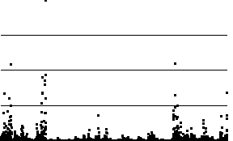

Random Fractals and the Stock Market
Surrogates of the Stock Market - Trading Time Example 2
Trading Time vs Clock Time Graph and Differences
On the left we see the 8
th
iterate sampled at 3128 equal time steps.
On the right is the graph of successive differences. Not surprisingly, all the differences are nonnegative.

Return to
Example 2
.